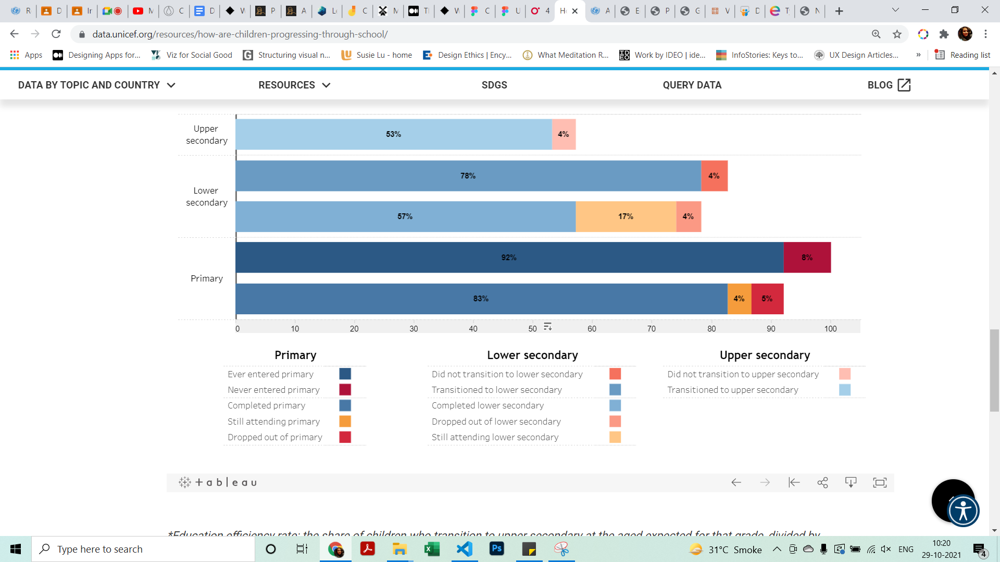

Education Pathway Analysis demonstrates children’s education progress from getting into the primary school to transitioning into the upper secondary school. The visualization showcases the percentage of children who never attended school, dropped out, are above age for a level of education and the percentage of children who have transitioned to the next level of education.
Purpose & Objective
Education Pathway Analysis demonstrates children’s education progress from getting into the primary school to transitioning into the upper secondary school. The visualization showcases the percentage of children who never attended school, dropped out, are above age for a level of education and the percentage of children who have transitioned to the next level of education.
The audience of this dashboard could be the general public and is especially useful for researchers, government officials, NGOs, policy makers, and other education stakeholders to make informed decisions.
Visualisation Design
Overview first. Detail on demand:
The dashboard first gives a global overview of the education efficiency of the world by default. The details could be viewed on demand. The user can select a particular country to view the children’s progression through the education system in that country.
The user can get to the details such as comparisons between groups: male/female, rural/urban, wealthiest/ poorest within a country, or even across countries. One can also compare different or same groups in different countries , such as children from the poorest quintile in India and Afganistan.
The dashboard uses bars and by default they are ordered according to the levels of education, from bottom to the top. This is quite intuitive and easy to understand as it follows the user's mental model of how a child progresses through an education system.
It shows how a single entity for example children who completed primary education are divided into children who transitioned and children who didn’t transition despite completing the previous level of education. The visualization also uses isotypes to show the percentage of students who made it to the upper secondary at the age expected for that level.

In the within country comparision and cross country comparision section, a spine chart is used to compare the groups selected in the filter at each of the levels for different countries or the same group within a country.
Interaction & Narrative Design
This first part is the inspiration for YOU doing the project. Spending 12 weeks on a project requires you to be really inspired by the topic. It is something you are willing to spend the time, beyond your day-to-day work. And hopefully, work on iterating on the output, even beyond the project time. It is a topic that you have been talking / thinking / planning about doing for a long-time and now is the right time to do it.
The interactions are intuitive and easy to understand. The tabs on the top of the viz help the user navigate between the national overview, within country comparison and cross country comparison easily.

The dashboard makes use of hover to help the user better understand the meanings of the percentage.

The dropdown filter helps the user to easily pick countries and parameters. Most interaction is straighforward and discoverable.

Sorting by sum of percentage is difficult to discover. One could find it on hovering.

Aesthetics & Quality of Design
The Education Pathway Analysis presents the data in a pyramid form, with the percentage of children who ever entered primary school at the bottom and progressing to the percentage of children transitioning to upper secondary school at the top. The visualization is simple, intuitive and easy to understand.
It also uses a colour blind friendly palette. The images below show how it would look for users having blue-yellow color blindness and red- green color blindness respectively:


What-If perspective
The visualization helps get an overview of the flow and education efficiency rate for each of the countries. However, to know which countries have the lowest education efficiency rate, the user would need to go through each of the countries in the dropdown menu and compare the rate. Sorting the countries according to the percentage of students entering each education or the education efficiency rate would help quickly find the countries that need the more attention.
The user would have to constantly access the legend due to the number of colours used. Different colours are used for the same parameters at differet levels of education. Also, the colours used for failing to get to the next level/ not transitioning to the next level and dropping off are similar. The colours could be consistently for different parameteres for each of the levels. Also, a contrasting colour could be used for parameters that are dissimilar such as dropping off and not transitioning.